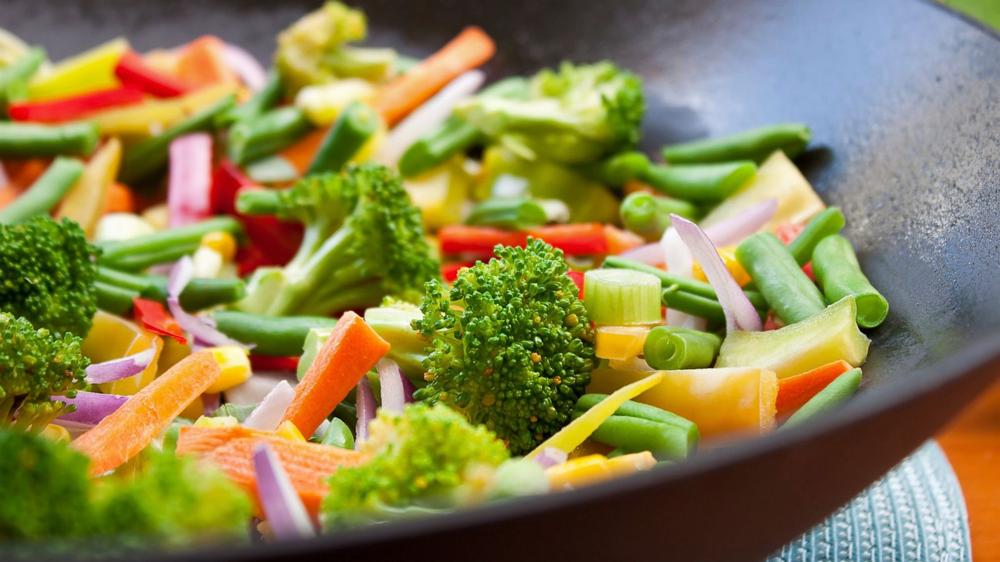

Are you looking to find a great place to eat but find your options limited by your allergies/intolerances? Good news, Food Match is the website for you! Food Match allows you to specify any kind of allergies/food intolerances you may have and helps you find restaurants in your area that cater to those needs. Now that Food Match has you covered, you want to go through the trouble of feeling like you can't find a place to eat.

Food Match helps you find restaurants with menu items that can be safely consumed regardless of your allergies or dietary preferences. Currently, the site can help you find delicious meals even if you follow a variety of diets such as vegetarian, vegan, and gluten-free diets. Simply specify which allergens or other food products you wish to avoid when you create your account, and we will find you a list of restaurant menus that you can enjoy without issues.
Food Match currently covers restaurants across Amherst, Massachusetts. Each of these restaurants feature menus with items that can be safely consumed by people with gluten allergies or who are vegetarian or vegan. Restaurant owners can submit their restaurant information for a to be featured on Food Match. Simply create an account and click on the add Restaurant button of the main screen to be featured on the site.